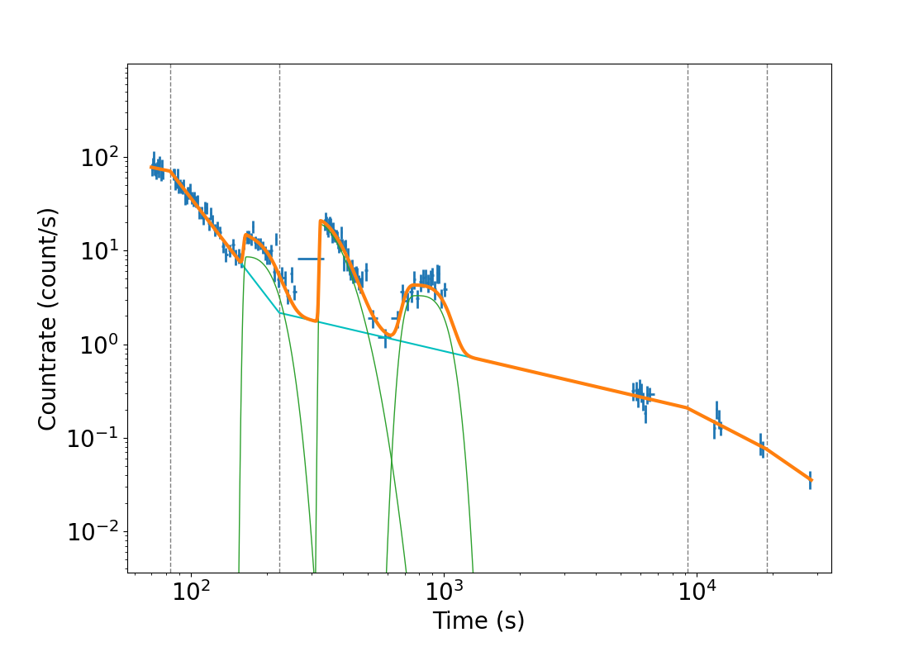

Featured Projects
Lightcurve and Flare Fitter

End-to-End Pipeline Development
An open-source Python data pipeline for the full modelling of gamma-ray burst light curves from the Swift space telescope.
Weak signal finding within complex time-series data, comprised of multiple evolving components.
- Pipeline development
- Modular design
- Time-series analysis
- Predictive modelling
- Error analysis
LAFF Viewer

Data Visualisation
A Streamlit-based front-end data explorer for the individual results of my LAFF code, and population-level correlations.
Persistent tracking and "drill-down" navigation form part of the data discovery lifecycle.
- Data visualisation
- UI Design
- Dashboard Development
text2playlist

Unstructured Data & API Integration
A small web application to parse text files (such as group chat logs) and extract music links.
Uses the Odesli API to obtain metadata, generating automated YouTube playlists and Spotify URI exports from disparate datasources.
- Unstructured data parsing
- Regex pattern matching
- API integration